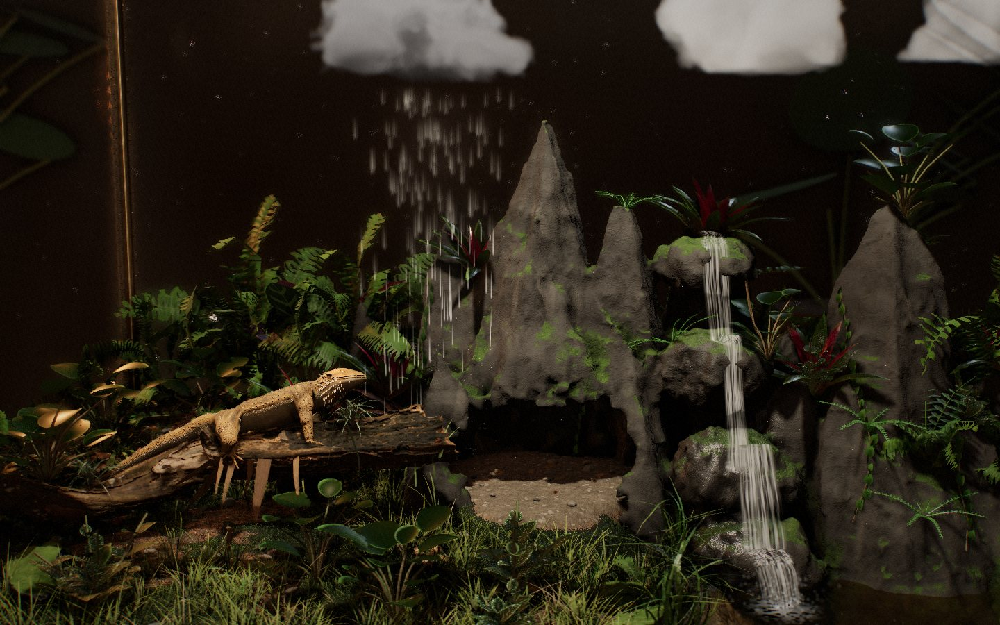

↗ OPEN INTERACTIVE DEMOTerrarium Tornado Experiment
A living rainforest under glass. Wring rain from clouds, shake out lightning, mist the ferns, stir the wind and ripple a waterfall-fed pool. Neon tetras school through the water while a fire-bellied toad explores the bank. The bearded dragon now has its own separate desert habitat.
- Rain, mist, wind & thunderstorms
- Living rainforest, waterfall & pool
- Schooling neon tetras & a fire-bellied toad
- Feed fish & explore the glass case
WebGL 2 · Best on desktop GPUs · Preview captured from the running demo
Rainforest habitatThree.js · WebGL 2Mouse & touch